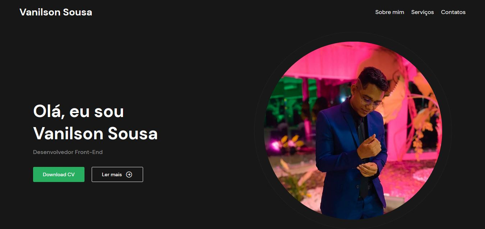

17/12/2021
Formatura em Pedagogia
Momento especialmente marcante na minha vida foi a minha formatura no curso de Pedagogia, um curso que iniciei com muito medo, mas que eu desenvolvi um grande amor por ele. O momento da formatura foi essencial, pois marcou o início da minha vida profissional. Em 2022 eu consegui meu primeiro emprego na área. E é graças a tudo isso que, também em 2022, eu conheci o mundo da programação e me apaixonei de cara. Meu atual emprego na área me permite estar me desenvolvendo cada vez mais e está sendo meu suporte essencial para poder mergulhar um pouco mais no mundo da programação.
19/03/2023
Segundo projeto de portfólio

Esse projeto é mais um motivo de alegria para mim, pois com ele eu consegui colocar em prática os conhecimentos que obtive na NLW-SpaceTime da Rocketseat. Nele, há conceitos de Flexbox, Grid Layout e Keyframes do CSS aplicados. Com esse projeto, senti que minha evolução na construção de interfaces visuais estavam progredindo cada vez mais e que eu estava cada vez mais ficando seguro quanto às minhas capacidades. Além disso, também há aplicados no projeto os conceitos básicos de Git e GitHub. Os conhecimentos que a Rocketseat trouxeram foram essenciais para tudo isso.